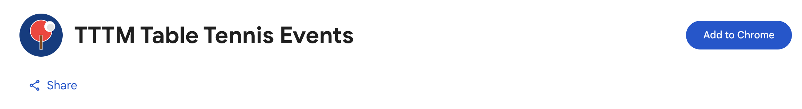
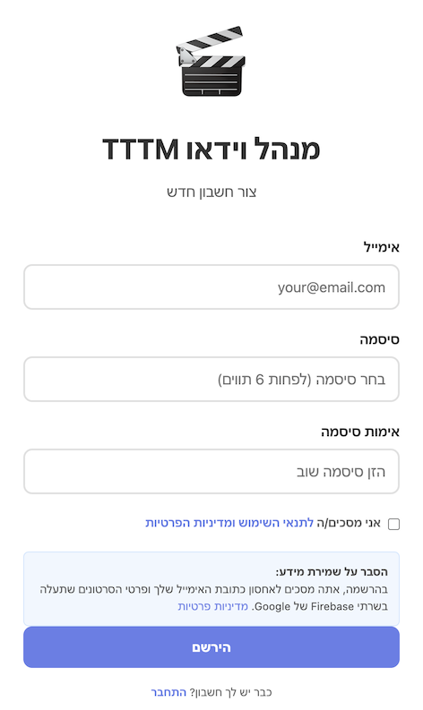
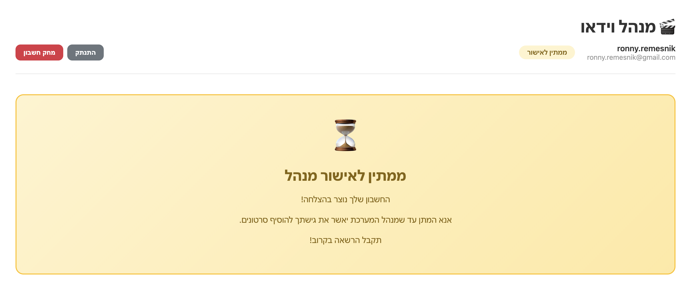
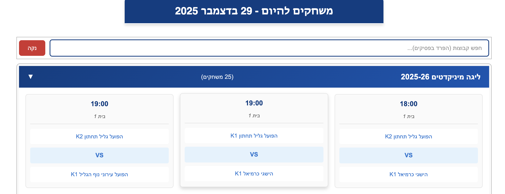
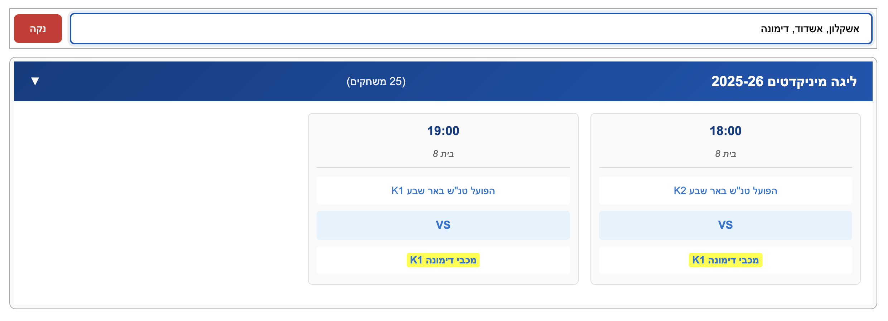
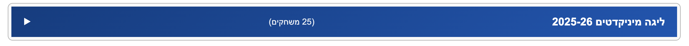
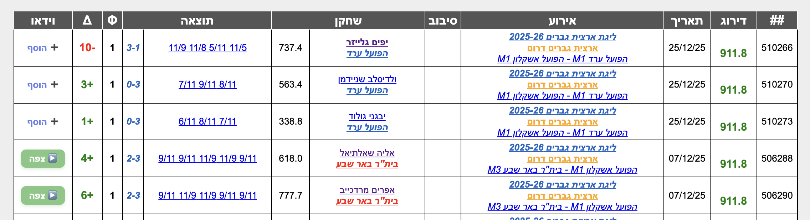
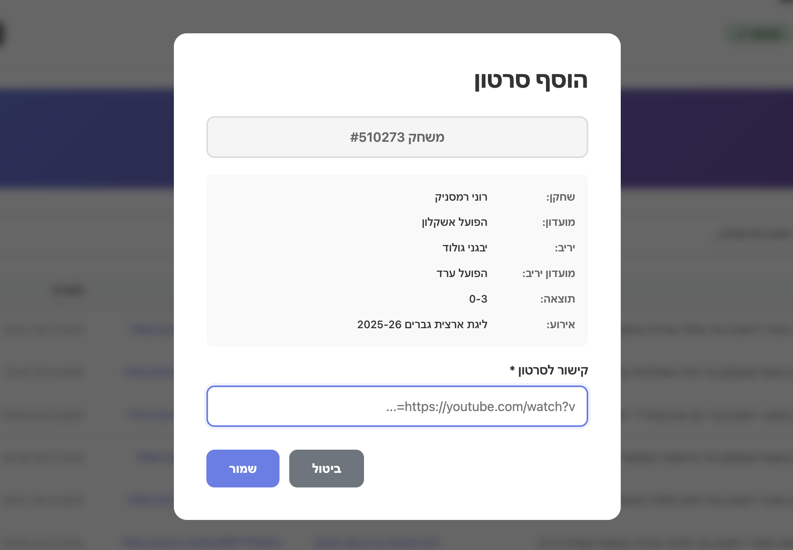
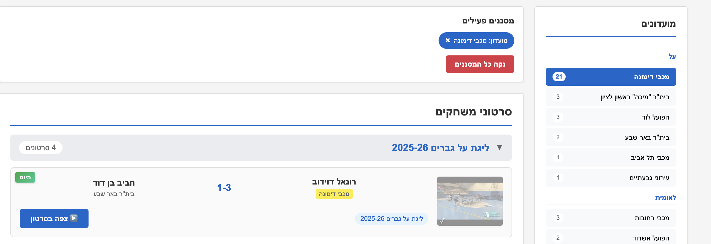

⚠️ אזהרה חשובה!
אסור להוסיף סרטונים של שחקנים אחרים ללא אישורם!
מותר להוסיף רק סרטונים של משחקים שבהם אתם השחקן הראשי .
הוספת סרטונים של שחקנים אחרים ללא אישורם תגרום לחסימת המשתמש מהמערכת!
1 התקנה והתחברות
התקנת התוסף
התוסף זמין להורדה ב-Chrome Web Store. לחצו על הקישור "תוסף Chrome" בראש הדף והוסיפו אותו לדפדפן שלכם.

דף Chrome Web Store עם התוסף ומוכן להתקנה
הרשמה והתחברות למערכת
לאחר התקנת התוסף, תצטרכו להירשם ולהתחבר כדי להוסיף וידאו.
משתמש חדש - הרשמה
-
היכנסו לדף שחקן באתר TTTM (כתובת המתחילה ב-
/p/)
-
לחצו על כפתור "➕ הוסף" ליד אחד המשחקים
-
חלון קופץ ייפתח עם טופס התחברות
-
לחצו על הקישור "הירשם" (מתחת לכפתור התחברות)
-
מלאו את הפרטים:
- כתובת אימייל
- סיסמה (לפחות 6 תווים)
- אימות סיסמה (הזינו את אותה סיסמה שוב)
-
סמנו את תיבת האישור "אני מסכים/ה לתנאי השימוש ומדיניות הפרטיות"
-
לחצו על כפתור "הירשם"
משתמש קיים - התחברות
-
פתחו את חלון התוסף (לחצו על "➕ הוסף" ליד משחק)
-
הזינו את האימייל והסיסמה שלכם
-
לחצו על כפתור "התחבר"

טופס ההרשמה וההתחברות עם שדות אימייל וסיסמה
אישור מנהל המערכת
חשוב לדעת: לאחר ההרשמה הראשונה, מנהל המערכת צריך לאשר את המשתמש שלכם.
- ההרשמה הראשונה תשלח בקשת אישור למנהל המערכת
- עד לאישור, לא תוכלו להוסיף סרטונים
- לאחר האישור, תוכלו להתחיל להשתמש בתוסף
- תהליך האישור עשוי לקחת עד 24 שעות

הודעה על המתנה לאישור מנהל / הודעה שהמשתמש אושר
💡 טיפ: לאחר האישור, התוסף יזכור אותכם ולא תצטרכו להתחבר שוב.
2 שימוש בעמוד הבית של TTTM
התוסף משדרג את עמוד הבית של אתר TTTM ומציג את משחקי היום בצורה נוחה ומסודרת.
📅 צפייה במשחקי היום
התוסף מציג אוטומטית את כל המשחקים המתוכננים להיום, מקובצים לפי סוג אירוע (ליגת על, לאומית, ארצית וכו').

עמוד הבית של TTTM עם רשימת משחקי היום מוצגת, כולל קבוצות מתקפלות לפי סוג אירוע
🔍 חיפוש וסינון קבוצות
ניתן לחפש קבוצות ספציפיות ולהדגיש אותן ברשימת המשחקים.
איך משתמשים בחיפוש?
-
הקלידו שם קבוצה בשדה החיפוש בחלק העליון של רשימת המשחקים
-
התוסף יסנן וידגיש רק משחקים הכוללים את הקבוצה שחיפשתם
-
ניתן לחפש מספר קבוצות בו-זמנית על ידי הפרדה בפסיקים
לדוגמה: מכבי חיפה, הפועל תל אביב, בית"ר
-
לחצו על כפתור "נקה" כדי למחוק את החיפוש ולראות את כל המשחקים

שדה החיפוש עם דוגמה של חיפוש קבוצה, והמשחקים המסוננים מודגשים בצהוב
📁 קיבוץ לפי אירועים
המשחקים מקובצים לפי סוג אירוע. ניתן לקפל ולפתוח כל קבוצה על ידי לחיצה על כותרת האירוע.

דוגמה לקבוצת משחקים מקופלת ומורחבת, עם החץ המסתובב
💡 טיפ: החיפוש שלכם נשמר אוטומטית! אם תחזרו לעמוד מאוחר יותר, הסינון יישאר כפי שהגדרתם.
3 שימוש בדף שחקן
התוסף מוסיף עמודת "וידאו" לטבלת המשחקים של כל שחקן, המאפשרת לצפות בסרטוני משחקים קיימים או להוסיף חדשים.
▶️ צפייה בוידאו קיים
אם למשחק כבר קיים וידאו, יופיע כפתור "▶️ צפה".
לחיצה על הכפתור תפתח את הוידאו בחלון חדש.
➕ הוספת וידאו חדש
אם למשחק אין וידאו, יופיע כפתור "➕ הוסף".
לחיצה על הכפתור תפתח חלון להוספת קישור לוידאו.

טבלת משחקים של שחקן עם עמודת "וידאו" חדשה, המציגה גם כפתורי "צפה" וגם כפתורי "הוסף"
איך מוסיפים וידאו למשחק?
-
היכנסו לדף השחקן באתר TTTM (כתובת המתחילה ב-
/p/)
-
מצאו את המשחק הרצוי בטבלת המשחקים
-
לחצו על כפתור "➕ הוסף" בעמודת הוידאו
-
חלון קופץ ייפתח עם פרטי המשחק
-
הדביקו את קישור YouTube לוידאו של המשחק
-
לחצו על "שמור" להוספת הוידאו לארכיון

חלון הוספת וידאו (popup) עם השדות המולאים - פרטי משחק וקישור YouTube
4 שימוש באתר הארכיון הראשי
לאחר הוספת וידאו דרך התוסף, הוא יופיע באתר הארכיון הראשי עם כלי סינון מתקדמים.
🎯 סינון לפי שחקנים, מועדונים ואירועים
השתמשו בלוחות הצד (שמאל וימין) כדי לסנן וידאו לפי:
- שחקנים: חפשו לפי שם שחקן או לחצו על שחקן ברשימה
- מועדונים: סננו לפי קבוצה ספציפית
- אירועים: בחרו סוג תחרות (ליגת על, לאומית, ארצית)
- תאריכים: בחרו טווח זמן (היום, אתמול, שבוע, חודש, שנה)

אתר הארכיון הראשי עם הלוחות הצדדיים והסינונים המסומנים
🔎 חיפוש שחקנים
השתמשו בשדה החיפוש בלוח השחקנים כדי למצוא שחקן ספציפי במהירות.
✅ סימון וידאו כנצפה
לחצו על כפתור "צפה בסרטון" - הוידאו יסומן אוטומטית כנצפה (עם סימון V ירוק).
❓ פתרון בעיות נפוצות
התוסף לא עובד באתר TTTM
פתרון:
- ודאו שהתוסף מותקן ומופעל בדף
chrome://extensions
- רעננו את הדף (F5 או Ctrl+R)
- נסו לסגור ולפתוח מחדש את הדפדפן
- ודאו שאתם באתר
www.tttm.co.il (התוסף עובד רק באתר זה)
לא רואה את עמודת הוידאו בדף שחקן
פתרון:
- ודאו שאתם בדף שחקן (כתובת URL מכילה
/p/ ואחריו מספר)
- המתינו כמה שניות לטעינת הדף המלאה
- רעננו את הדף
לחצתי על "הוסף וידאו" ושום דבר לא קורה
פתרון:
- פתחו את Console (F12 ← Console) וחפשו הודעות שגיאה
- הסירו את התוסף והתקינו אותו מחדש
- ודאו שאתם משתמשים בגרסה עדכנית של Chrome
הוידאו לא מופיע באתר הארכיון לאחר ההוספה
פתרון:
- המתינו כמה דקות - לפעמים לוקח זמן לעדכון
- רעננו את דף הארכיון
- נקו את Cache של הדפדפן (Ctrl+Shift+Delete)
- ודאו שהקישור ל-YouTube תקין
💡 טיפים ושיטות עבודה מומלצות
✅ הוספת וידאו איכותית
- ודאו שקישור YouTube פעיל ונגיש
- בדקו שהוידאו אכן מתאים למשחק לפני השמירה
- השתמשו בקישורים מלאים מ-YouTube (https://www.youtube.com/watch?v=...)
🔎 חיפוש יעיל באתר הארכיון
- השתמשו במספר סינונים יחד למציאה מדויקת
- החיפוש בשחקנים תומך בחיפוש חלקי (אפשר להקליד רק חלק מהשם)
- סנן לפי תאריך כדי למצוא משחקים אחרונים
📊 מעקב אחר שחקנים/קבוצות מועדפים
- השתמשו בשדה החיפוש במשחקי היום כדי לעקוב אחר הקבוצות שלכם
- החיפוש נשמר - פעם אחת מספיק להגדיר ואתם תמיד תראו את הקבוצות שלכם
- באתר הארכיון, לחצו על שחקן או קבוצה בצד - הסינון יישאר פעיל
← חזרה לאתר הארכיון
יש שאלות נוספות? צרו קשר או פתחו issue ב-GitHub
© 2025 ארכיון וידאו טניס שולחן